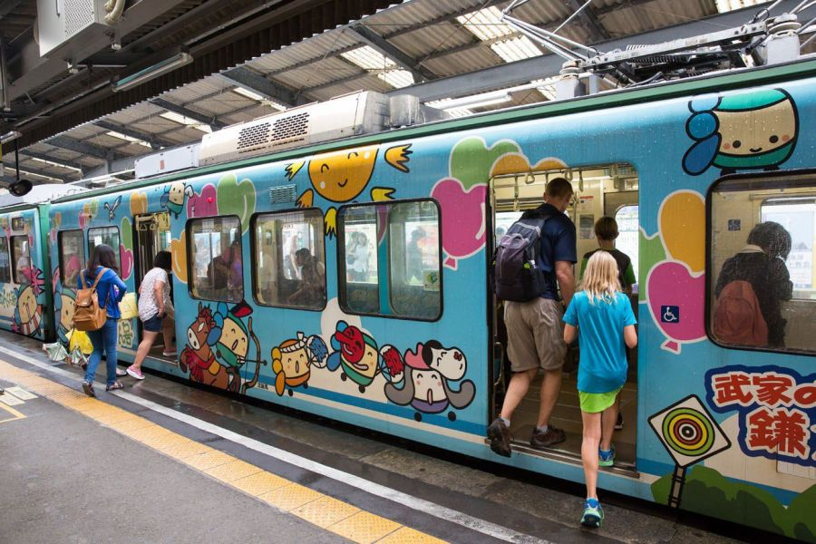

BEOGRAD – DOHA
Došlo je vreme da krenemo na ovo dugo iščekivano putovanje. Sastanak na aerodromu „Nikola Tesla“ u dogovoreno vreme. Let do Dohe. Čekamo našu konekciju za Japan.
DOHA – TOKIO
Krećemo ka Japanu, zemlji šinta i budizma, gejša i rajskih hramova. Nastavljamo na let do Tokija u jutarnjim časovima. U večernjim časovima slećemo u Tokio, koji je jedan od najvećih gradova i prestonica Japana. Ima oko 14 miliona stanovnika i ubraja se u svetske ekonomske centre. Da je država, bio bi osma na svetu po ekonomskoj moći. Nalazi se na obali Pacifika, na ušću reke Edo u okean. Do kraja 16. veka na tom mestu nalazilo se ribarsko seoce Edo, a vojni vladar Japana šogun Iejasu Tokugava odlučio je da tu izgradi grad – sedište šoguna. Već 1603. izgrađena je šogunova palata, mnogo hramova i svetilišta, i nastao je jedan od najdinamičnijih gradova svog vremena. Transfer metroom do smeštaja i slobodno vreme. Noćenje.
TOKIO
Dan rezervisan za razgledanje Japanske prestonice. Prva stanica biće nam četvrt Čijoda i carska palata koja je glavna rezidencija japanskog cara. Zabranjeno je posećivati unutrašnjost palate, ali posetioci mogu uživati u lepotama spoljnjeg dela. Iako se ne ulazi, palatu opet posećuje veliki broj turista. Vrtovi koji su uvek slobodni za obilaženje su odlično uređeni, odakle kroz prozor možete zaviriti u velelepne prostorije palate. Čitav taj predeo nalazi se u samom centru grada i parkovno je područje, okruženo vodenim jezerima. Sama palata je izgrađena na mestu starog dvorca Edo porodice Tokugava, koja je u 17. i 18. veku vladala Japanom. Ulazimo u metro i odlazimo do Asakuse, starog dela grada prepunog hramovima. Šetamo do hrama Sensođi, bacamo nekoliko novčića u sanduk ispred hrama i u njegovom dvorištu udišemo vazduh mirisnih štapića, jer po verovanju Japanaca ovaj običaj ljudima pomaže da bolje razmišljaju i rade. Put nas dalje vodi do Nakamise-dori, jedne od najstarijih japanskih trgovačkih ulica koja datira iz 17. veka. Većinu prodavnica u ovom delu već nekoliko generacija vode iste porodice, nudeći suvenire, vrhunsku uličnu hranu i neodoljive grickalice.
TOKIO (2 noćenja)
Slobodno vreme za individualne aktivnosti u Tokiju ili fakultativni izlet do Kamakure, koju drugim imenom zovu grad muzej. U gradu postoji 19 šinto svetilišta i 65 budističkih hramova, od kojih su dva hrama reda Zen najstarija u Japanu. Videćemo svetilište Haćiman, kao i glavnu znamenitost grada – ogromnu statuu Bude na otvorenom. Grad se nalazi u blizini Tokija pa je jedno od popularnih izletišta njegovih stanovnika. U popodnevnim časovima povratak u Tokio i slobodno vreme. Sutradan fakultativni izlet u Nikko ili slobodno vreme u Tokiju. Nikko je smešten u prelepim planinama severno od Tokija, pun starih hramova, svetilišta, palata i grobnica. Obići ćemo grobnicu Iejasua Tokugave, kao i mauzolej Tošogu, koji se nalazi pod UNESCO kulturnom zaštitom. Imaćemo priliku da vidimo i Šinkjo „tajni most“ na reci Daija. Povratak u Tokio u večernjim časovima. Noćenje.
TOKIO – OSAKA
Odjavljujemo se iz hotela i krećemo za Osaku. Treći po veličini japanski grad, Osaka ima preko hiljadu godina dugu istoriju, a danas je poslovni, industrijski, trgovački i saobraćajni centar Japana. Videćemo zamak Osaka pored kog se nalazi i nekoliko veoma dobrih muzeja. Obići ćemo i deo grada poznat po mnogobrojnim restoranima sa domaćom kuhinjom. Slobodno vreme. Noćenje.
OSAKA (2 noćenja)
Ovaj dan rezervisan je za individualne aktivnosti u Osaki ili fakultativni odlazak do Nare, prve japanske stalne prestonice osnovane 710. godine. Tada se zvala Heiđokjo (Tvrđava mira), a čuvena je po tome što je u njoj budizam prvi put počeo da se pripoveda, odakle se raširio po čitavoj zemlji. Obići ćemo hram Todaiđi, Park Nara odnosno park jelena, šino svetilište Kasuga, a tu su još i hram Kofukuđi i mnoštvo drugih znamenitosti. U večernjim časovima povratak u Osaku. Sledeći dan rezervisan za fakultativni izlet u Kjoto. Grad je prestonica japanske kulture i najdugovečniji glavni grad Japana jer je car svoje sedište prebacio u Tokio tek nakon više od 1000 godina. Prepun je drevnih palata, velelepnih vrtova i različitih muzeja. U Kjotu su čitave ulice istovremeno i muzeji, jer je svaka zgrada primerak stare japanske arhitekture. Nakon smeštaja u hotel obići ćemo hram Kiđomizu, Zlatni paviljon Kinkakuđi, impresivnu građevinu smeštenu iznad velikog ribnjaka čija su prva dva sprata potpuno prekrivena zlatnim listovima. Put nastavljamo do jednog od najlepših očuvanih utvrđenih japanskih zamkova, zamka Niđo i najpoznatijeg kvarta Gion koji je zapravo Geisha District. Šetaćemo kroz njegove ulice okruženi mnogobrojnim čajdžinicama, ekskluzivnim restoranima i tradicionalnim drvenim kućama gde i dan danas žive gejše. Reč gejša u bukvalnom prevodu znači umetnica, a to su posebno obrazovane i obučene žene koje su u srednjovekovnom Japanu u restoranima zabavljale goste pesmom, igrom i svirkom. Slobodno vreme. Povratak u Osaku. Noćenje.
